Private by default · Source available · Self-hosted
Catalog firearms, photos, maintenance, range sessions, values, and dispositions on a server you control. No vendor account, telemetry, or subscription. One local administrator keeps the collection private.
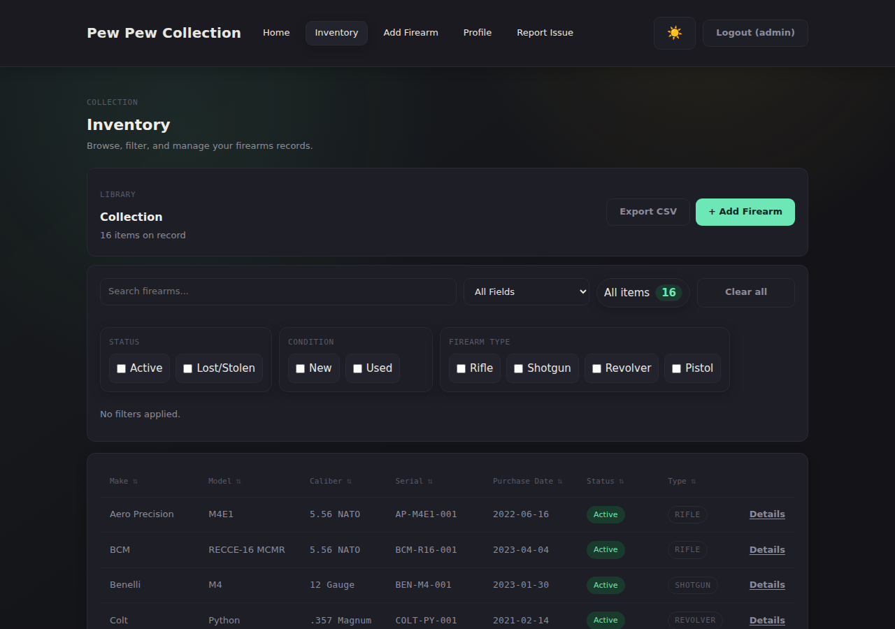
Your records stay on your hardware. There is no vendor account or telemetry; access is protected by the local administrator account you create.
Create a print-friendly inventory with serial numbers, condition, and total value. Confirm the fields and format your own insurer requires.
One Docker command, guided first-run setup, and one persistent data directory. Source-available under BUSL-1.1; personal, noncommercial use is free.
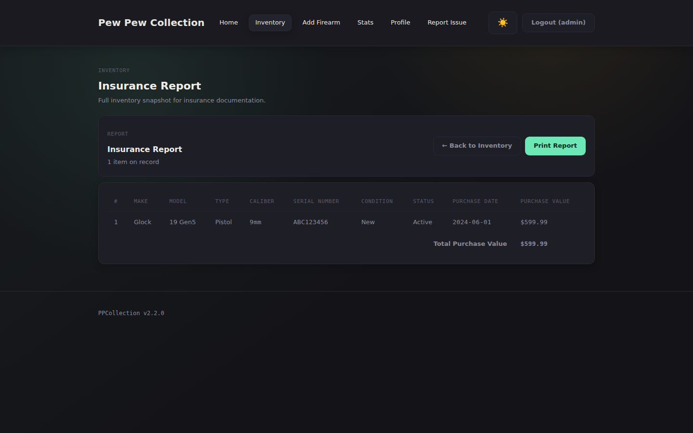
Insurance documentation
Many collectors start tracking after an insurer asks for a home inventory. Pew Pew Collection generates a print-friendly summary you can review with your insurer and update whenever your collection changes.
Capabilities
Create one local administrator during guided first-run setup. Passwords are bcrypt-hashed, forms use CSRF protection, and signed-in sessions survive container restarts when /data is persisted.
Generate a print-friendly inventory and PDF with per-firearm details and total purchase value. CSV import and export keep your data portable.
Track make, model, serial, caliber, type, condition, purchase details, warranty, storage location, notes, photos, and dispositions.
Log cleanings, repairs, parts, and due reminders. Record range dates, locations, rounds fired, notes, and lifetime round counts for each firearm.
Search, sort, and filter the collection on desktop or mobile. Local analytics break records down by type, caliber, make, condition, and acquisition trend.
The SQLite database, photo files, session records, and generated session secret live under /data. The opt-in update check is off by default.
Built for
Track make, model, serial, caliber, condition, and provenance for every firearm you own. Powerful search and filters keep a growing collection navigable, and dedicated analytics show what you actually own at a glance.
See the inventory & stats →Generate a print-friendly inventory with total purchase value, serial numbers, and condition. Review it with your insurer, then update and reprint it as your collection changes.
See the insurance report →Disposition tracking records when a firearm was sold, gifted, or transferred — including to whom and when. Keep a clean chain-of-custody record for the lifetime of your collection, and pass it on with the rest of your records.
See disposition tracking →In the field
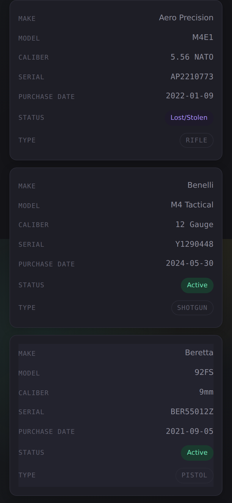
→ MOBILE — Inventory collapses into a card layout.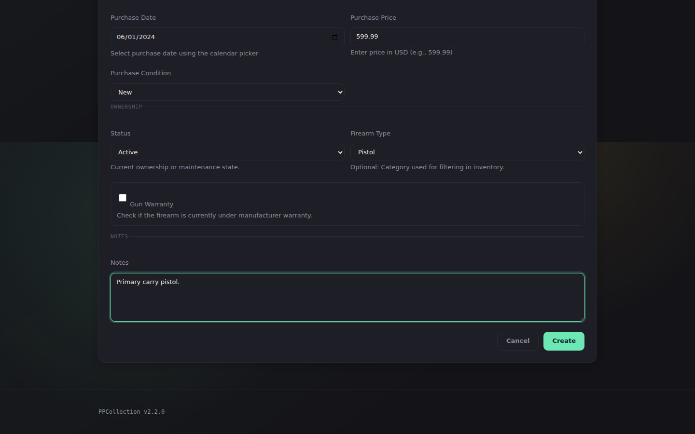
→ ADD FIREARM — Comprehensive detail capture.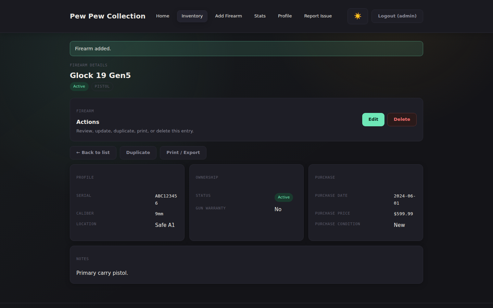
→ DETAIL VIEW — Full record with edit & delete.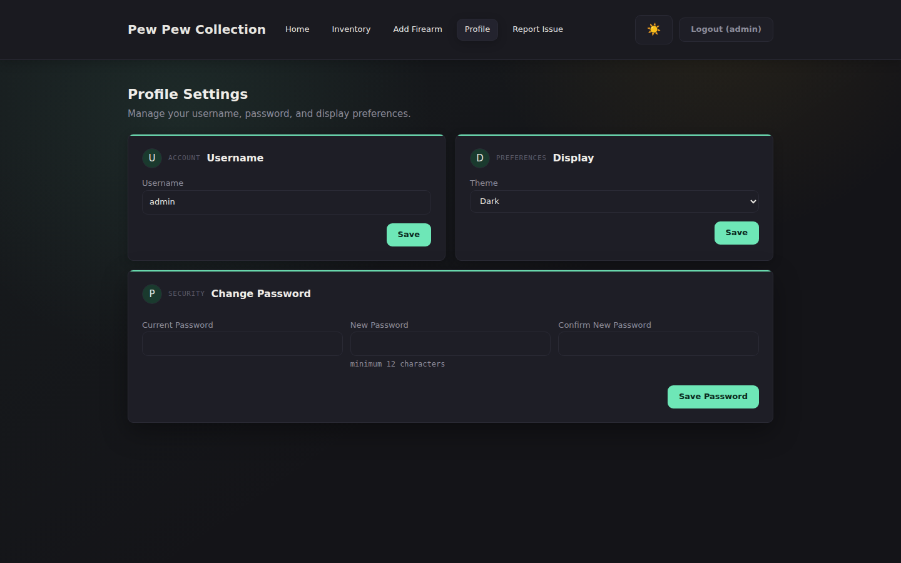
→ PROFILE — Account, display preferences, and password management.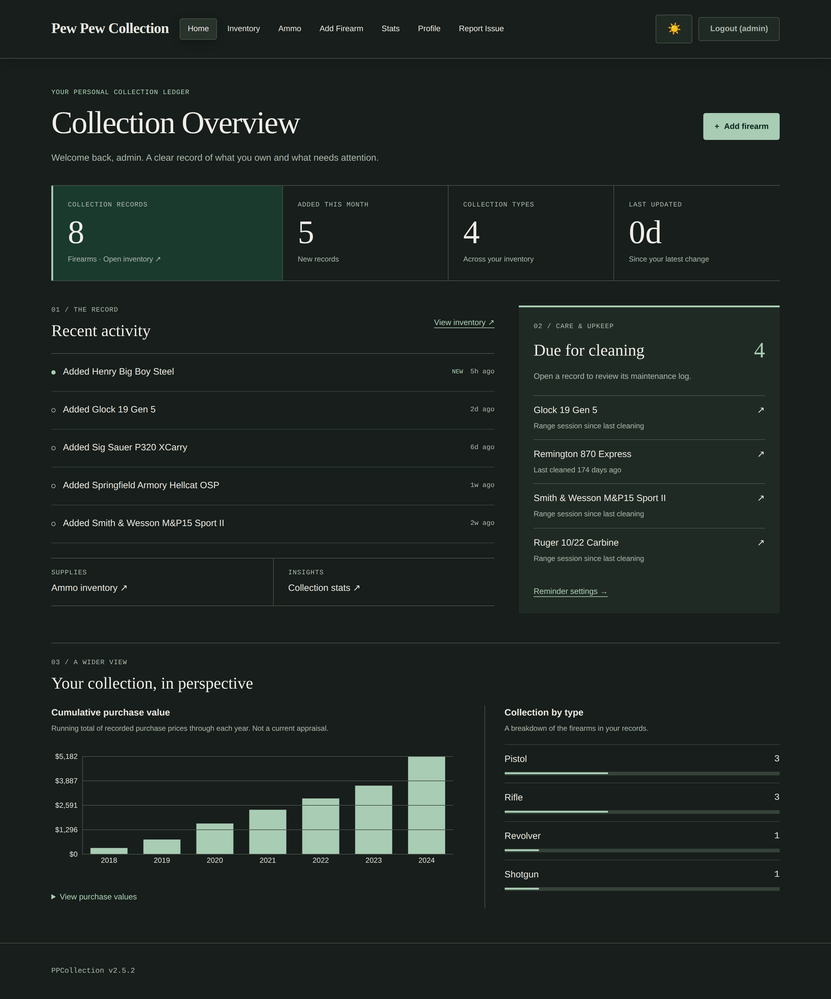
→ DASHBOARD — Activity feed, value chart, and type breakdown.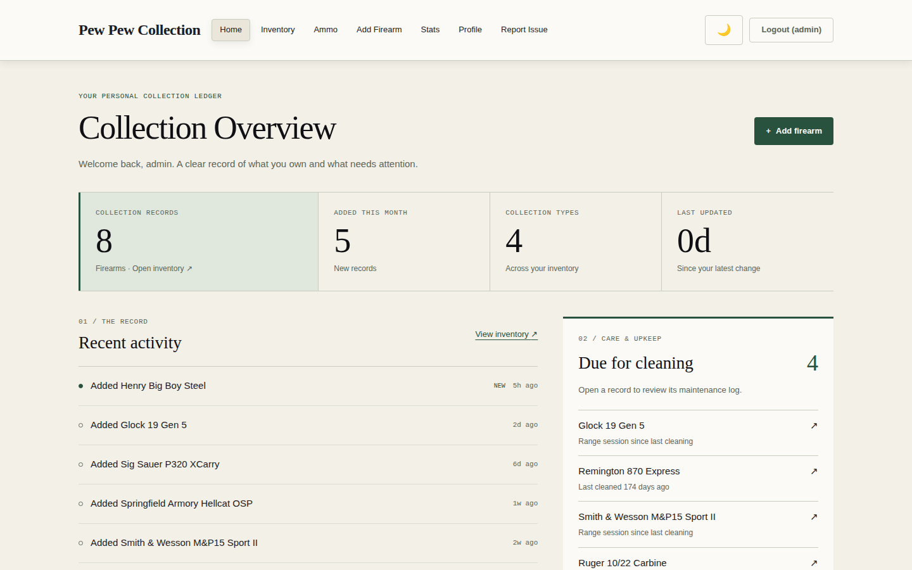
→ LIGHT MODE — Same app, lighter palette.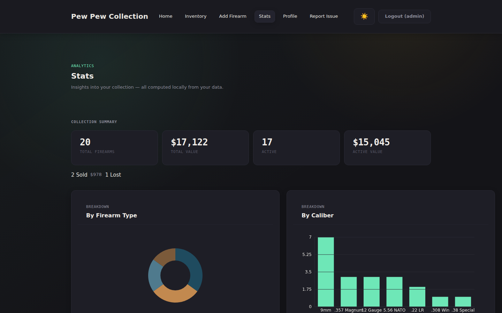
→ STATS — Local analytics by type, caliber, make, condition, and trend.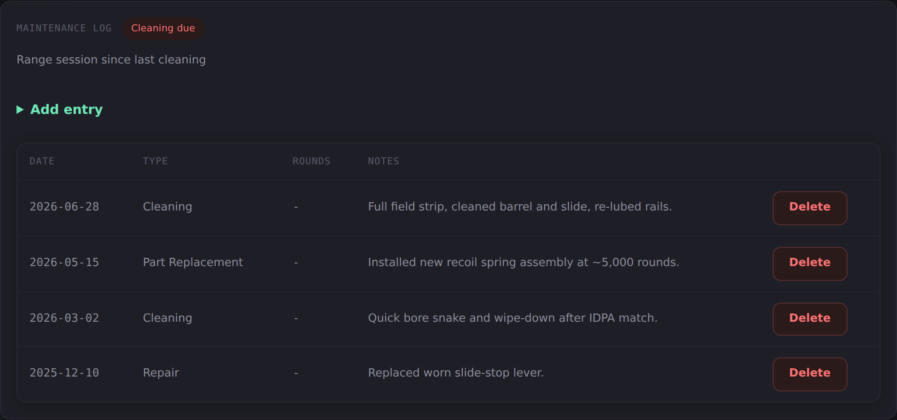
→ MAINTENANCE LOG — Cleaning and repair entries with configurable due-reminder.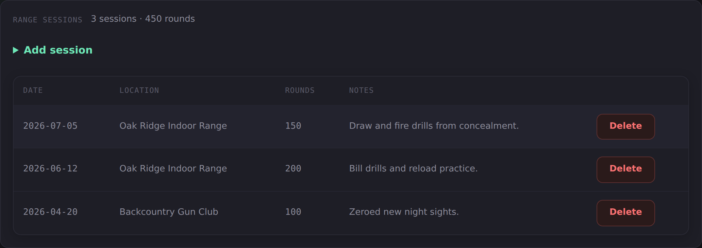
→ RANGE SESSIONS — Log date, location, and rounds. Running totals per firearm.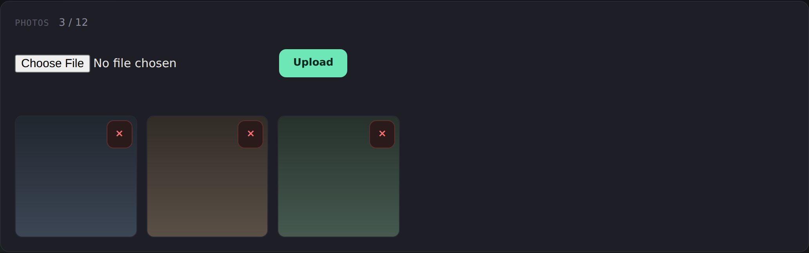
→ PHOTO ATTACHMENTS — Up to 12 photos per firearm, stored in your data volume.Deploy
# Pull & run in one command docker run -d \ --name ppcollection \ -p 3000:3000 \ -v /srv/ppcollection/data:/data \ --restart unless-stopped \ ghcr.io/gogorichielab/ppcollection:latest
services: ppcollection: image: ghcr.io/gogorichielab/ppcollection:latest ports: - "3000:3000" volumes: - ./data:/data restart: unless-stopped
Run the Docker command or compose file. The image is hosted on GitHub Container Registry — no Docker Hub account required.
Run docker logs ppcollection. On a fresh install the app prints a one-time setup code. No environment variables to generate — the session key is created for you and stored in your data directory.
Navigate to http://localhost:3000, enter the setup code, and choose your username and password. You are signed in straight away, and the setup page is disabled for good.
Add your first firearm. Inventory and sessions live in SQLite; photos and the generated session secret live beside it in the mounted /data directory.
Always recreate the container with the same /data bind mount or named volume. If an update shows first-run setup again, stop and restore the original mount before adding records.
Privacy & resilience
The app needs the network only to pull its container image. Runtime update checks are opt-in, and telemetry is not included.
Protect /data, not only app.db. Stop the container or use a SQLite-aware snapshot, copy the directory, and test a restore. That captures photos, sessions, and the generated secret too.
Self-hosting gives you control and responsibility. Keep Docker and the app current, use HTTPS for remote access, restrict network exposure, and encrypt sensitive backups.
Need every environment variable, reverse-proxy setting, or recovery command? Use the configuration guide, operations and backup guide, and security guide.
Questions
No. Pew Pew Collection does not include reporting or telemetry. It runs on your hardware with a local administrator account. The only built-in outbound request is an optional GitHub release check, which is off by default.
Self-hosting removes the application vendor as a custodian of your inventory, but it does not make records immune from lawful access, device seizure, or disclosure obligations. Those questions depend on jurisdiction and circumstances; ask a qualified attorney for legal advice.
Back up the entire mounted /data directory so the database, photos, sessions, and generated secret stay together. Stop the container or use a SQLite-aware snapshot while copying, keep another encrypted copy, and test a restore.
You can, and many collectors start there. The app adds enforced unique serial numbers, structured search and filtering, generated insurance reports with totals, disposition tracking (sold / lost / stolen), and a real schema that won't get accidentally re-sorted into the wrong rows.
Yes. After the initial Docker pull, the app runs entirely offline. There is one opt-in feature (UPDATE_CHECK=true) that checks GitHub for new releases; it is off by default.
Personal, noncommercial self-hosted use is available at no charge under the Business Source License 1.1. Other production use may require a commercial license. The licensed work converts to Apache 2.0 on the license's change date; read the license for the terms.
CSV import is built in. Match your columns to the field names listed in the import dialog and import in one click.
Photo attachments are built in: upload up to 12 photos per firearm from its detail page. Images are stored locally in your data volume (/data/photos), so backing up the data directory captures the database and photos together.
Compare
Pew Pew Collection isn't for everyone. Here's how it compares so you can decide.
| Pew Pew Collection | Spreadsheet | Cloud apps | |
|---|---|---|---|
| Data location | Your hardware | Your hardware (or Google Drive) | Vendor's servers |
| Vendor account required | No | No / Yes | Usually |
| Local sign-in | One administrator | Usually none | Vendor-managed |
| Insurance-ready report | ✓ Built-in print PDF | Manual | Sometimes |
| Enforced unique serials | ✓ | No | Varies |
| CSV import / export | ✓ | N/A | Varies, sometimes paywalled |
| Disposition tracking (sold / lost / stolen) | ✓ | Manual | Varies |
| Search & filter | ✓ | Limited | ✓ |
| Subscription cost | $0 | $0 | Monthly or yearly |
| Source available | ✓ BUSL-1.1 | N/A | Varies |
| Offline | ✓ | ✓ | Varies |
There are several reputable cloud-based firearm inventory apps, and if a hosted service with cross-device sync is what you want, one of them may suit you better. Pew Pew Collection makes the opposite trade: you keep the data and the control, and you run it yourself.
Source Available
Pew Pew Collection is source-available under BUSL-1.1. Personal, noncommercial self-hosted use is free, and contributions are welcome.